Indstillinger > Netværksindstillinger > Indstillinger til Internetforbindelse (avancerede indstillinger)
Indstillinger til Internetforbindelse (avancerede indstillinger)
Hvis du ikke kan oprette forbindelse til internettet med de grundlæggende indstillinger, skal du ændre indstillingerne efter behov. Juster hvert enkelt punkt, så det stemmer overens med dit netværksmiljø.
1. |
Vælg |
|---|---|
2. |
Vælg [Indstillinger til Internetforbindelse]. |
3. |
Vælg [Brugerdefineret]. |
 (Indstillinger) >
(Indstillinger) >  (Netværksindstillinger).
(Netværksindstillinger).Forbindelsesmetode
Gør det muligt at vælge den metode, der skal bruges til at oprette forbindelse til internettet. Denne indstilling er kun tilgængelig på PS3™-systemer, der understøtter trådløst LAN.
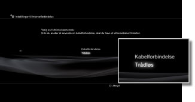
| Kabelforbindelse | Vælg denne indstilling for at oprette forbindelse med et Ethernet-kabel. |
|---|---|
| Trådløs | Vælg denne indstilling for at oprette trådløs forbindelse via trådløst LAN. |
WLAN indstillinger
Indstil adgangspunktets SSID. Denne funktion er kun tilgængelig på PS3™-systemer, der er udstyret med den trådløse LAN-funktion.
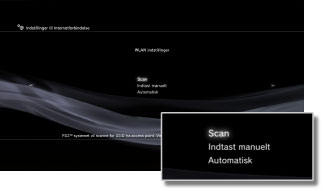
| Scan | Scan efter et adgangspunkt i nærheden. Vælg denne indstilling, hvis du ikke kender SSID'et på adgangspunktet. Systemet registrerer adgangspunkter i nærheden og viser oplysninger om SSID og sikkerhedsindstillinger. |
|---|---|
| Indtast manuelt | Angiv adgangspunktet ved at indtaste dets SSID manuelt vha. et tastatur. Vælg denne indstilling, hvis du kender SSID'et. |
| Automatisk | Brug adgangspunktets automatiske indstillingsfunktion. Denne indstilling er kun tilgængelig i områder, hvor PS3™-systemer, der understøtter funktionen, sælges. Vælg denne indstilling, hvis der bruges et adgangspunkt, som understøtter automatisk opsætning. Følg instruktionerne på skærmen. |
WLAN sikkerhedsindstillinger
Angiv en krypteringsnøgle for et adgangspunkt. Denne funktion er kun tilgængelig på PS3™-systemer, der er udstyret med den trådløse LAN-funktion.
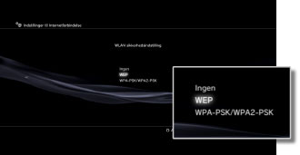
| Ingen | Angiv ikke en krypteringsnøgle. |
|---|---|
| WEP | Angiv en krypteringsnøgle. Krypteringsnøglen kan angives i næste skærmbillede. Krypteringsnøglen gengives som en række stjerner. |
| WPA-PSK / WPA2-PSK |
Autentifikationsindstilling
Disse indstillinger er kun tilgængelige på PS3™-systemer, der sælges i Korea, og findes kun på PS3™-systemer, der er udstyret med den trådløse LAN-funktion.
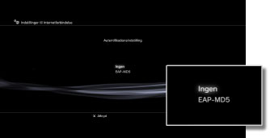
| Ingen | Indstil ikke godkendelsesoplysninger. |
|---|---|
| EAP-MD5 | Indstil godkendelsesoplysninger ved brug af offentlige WLAN-tjenester. Indtast dit bruger-ID og din adgangskode i det næste skærmbillede. Yderligere oplysninger fremgår af dokumentationen fra udbyderen af den offentlige WLAN-tjeneste. |
Ethernet-driftstilstand
Indstil ethernet-dataoverførselshastigheden og driftsmetoden. Normalt vælges [Autodetekt].
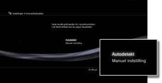
| Autodetekt | Indstil grundlæggende indstillinger automatisk. |
|---|---|
| Manuelle indstillinger | Indstil ethernet-dataoverførselshastigheden og driftsmetoden manuelt. |
IP adresseindstilling
Indstil metoden til læsning af IP-adresse ved tilslutning til internettet.
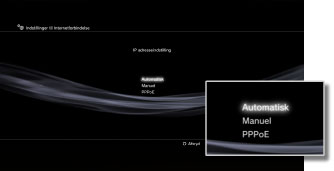
| Automatisk | Brug IP-adressen, der tildeles af DHCP-serveren. Du kan angive DHCP-serverens værtsnavn i det næste skærmbillede. |
|---|---|
| Manuel | Indstil IP-adressen manuelt. Du kan angive værdier for IP-adressen, subnet-masken, standardrouteren og primær og sekundær DNS i det næste skærmbillede. |
| PPPoE | Opret forbindelse til internettet via PPPoE. Du kan angive dit bruger-ID og din adgangskode i det næste skærmbillede. |
DHCP
Der angives et DHCP-værtsnavn. Du skal som regel vælge [Indstil ikke].
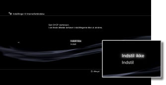
| Indstil ikke | Der angives intet DHCP-værtsnavn. |
|---|---|
| Indstil | Der angives et DHCP-værtsnavn. |
DNS indstilling
Angiv DNS-serveren.
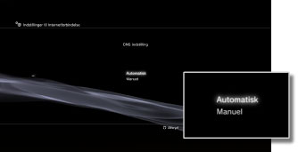
| Automatisk | Find automatisk DNS-serverens adresse. |
|---|---|
| Manuel | Angiv DNS-serverens adresse manuelt. |
MTU
Konfigurer den MTU-værdi, der skal bruges ved transmission af data. Normalt vælges [Automatisk].
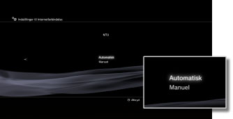
| Automatisk | Indstil MTU-værdien automatisk. |
|---|---|
| Manuel | Angiv den maksimale størrelse på datapakker (i bytes), der kan sendes i én transmission. |
proxyserver
Indstil den proxyserver, der skal bruges.
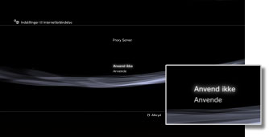
| Anvend ikke | Brug ikke en proxyserver. |
|---|---|
| Anvend | Brug en proxyserver. Du kan angive proxyserverens adresse og portnummer i det næste skærmbillede. |
UPnP
Indstil for at aktivere eller deaktivere UPnP (Universal Plug and Play).
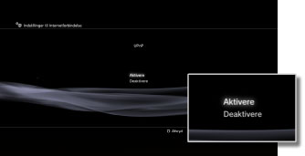
| Aktivere | Aktiver UPnP. |
|---|---|
| Deaktivere | Deaktiver UPnP. |
Tip
Hvis den indstilles til [Deaktivere], bliver kommunikation med andre muligvis begrænset, når tale-/videochat-funktionen eller kommunikation-funktioner til spil anvendes.